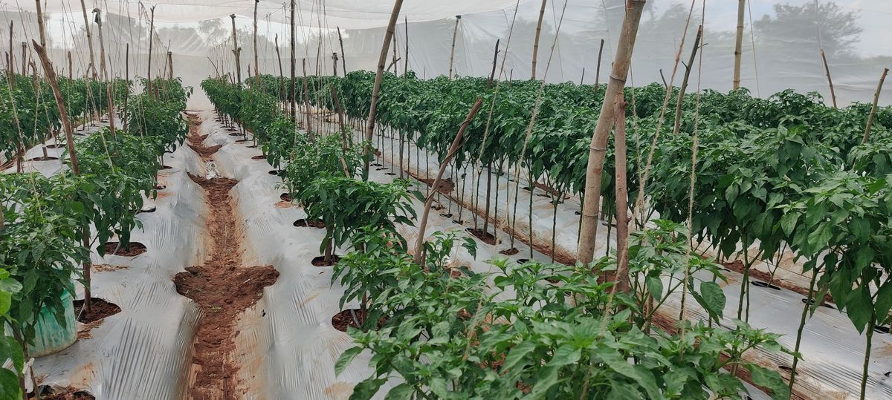
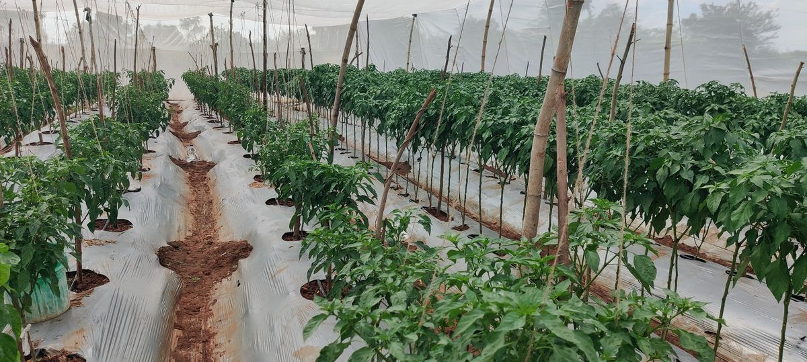
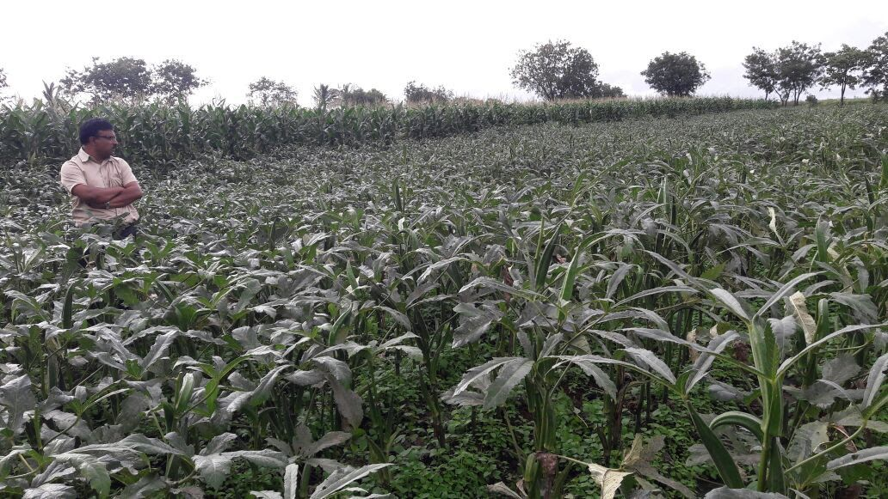
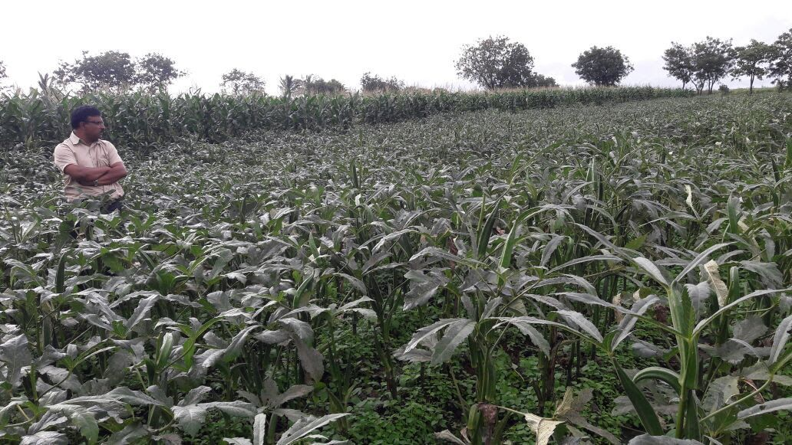
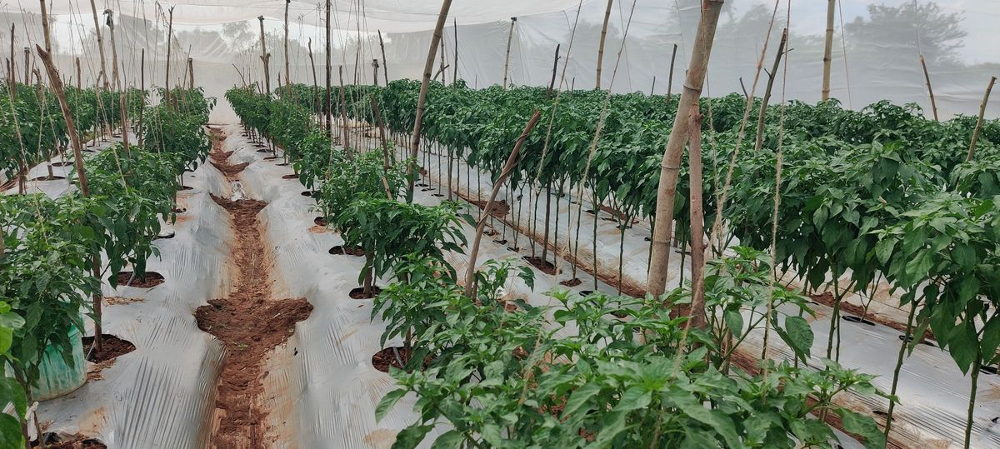
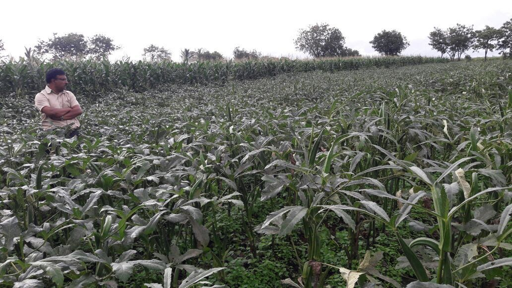

ISIRI SEEDS PRODUCTION
With a legacy grounded in agricultural expertise, we combine traditional knowledge with modern innovation to deliver superior quality seeds for our clients.
 

 



With a legacy grounded in agricultural expertise, we combine traditional knowledge with modern innovation to deliver superior quality seeds for our clients.


Excellence in every seed, innovation in every solution
Developed under expert supervision and strict field quality inspections, our seeds are thoroughly tested to ensure compliance with the highest industry standards
Diverse seed portfolio for different climates and agricultural needs across regions
Generations of agricultural knowledge and local expertise combined with global standards
ISIRI is dedicated to advancing seed production practices through innovation and provide superior seeds to its clients. We combine traditional expertise with modern innovation to deliver seeds that meets the global standards.
Every plant during seed production process goes through rigorous quality checks to ensure purity, performance, and consistency. We work closely with growers to understand their evolving needs.
Connect with our agricultural experts and discover premium seed solutions tailored to your needs